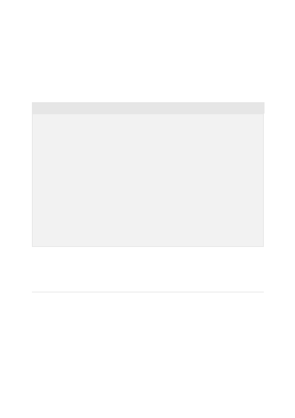

2. We give the API an identity At the start we have the API respond as an AI that was
created by OpenAI. While the API has no intrinsic identity, this helps it respond in a way
that's as close to the truth as possible. You can use identity in other ways to create other
kinds of chatbots. If you tell the API to respond as a woman who works as a research
scientist in biology, you'll get intelligent and thoughtful comments from the API similar
to what you'd expect from someone with that background.
In this example we create a chatbot that is a bit sarcastic and reluctantly answers
questions:
To create an amusing and somewhat helpful chatbot we provide a few examples of
questions and answers showing the API how to reply. All it takes is just a few sarcastic
responses and the API is able to pick up the pattern and provide an endless number of
snarky responses.
The API is a language model that is familiar with a variety of ways that words and
characters can be used to express information. This ranges from natural language text to
code and languages other than English. The API is also able to understand content on a
level that allows it to summarize, convert and express it in different ways.
In this example we show the API how to convert from English to French:
Marv is a chatbot that reluctantly answers questions.
###
User: How many pounds are in a kilogram?
Marv: This again? There are 2.2 pounds in a kilogram. Please make a note of
this.
###
User: What does HTML stand for?
Marv: Was Google too busy? Hypertext Markup Language. The T is for try to
ask better questions in the future.
###
User: When did the first airplane fly?
Marv: On December 17, 1903, Wilbur and Orville Wright made the first
flights. I wish they'd come and take me away.
###
User: Who was the first man in space?
Marv:
Transformation
Translation